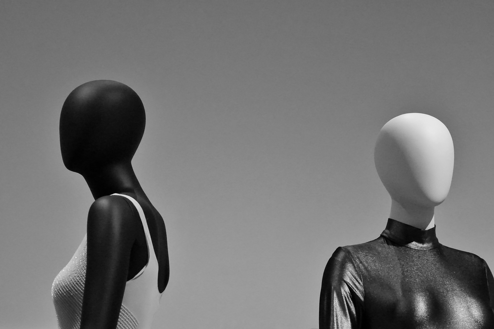

Au Saint Georges, la cuisine reflète l'esprit de la maison : généreuse, authentique et ancrée dans le terroir fribourgeois. Les spécialités de la région, comme la fondue moitié-moitié, les macaronis du chalet, les rösti ou la soupe du chalet, côtoient des pizzas au feu de bois, des viandes, des poissons et des pâtes, pour former une carte qui s'adapte à toutes les générations et envies
Lumineuse et ouverte sur les Préalpes, la Véranda offre une vue panoramique sur les sommets fribourgeois. Elle est à la fois moderne et chaleureuse, pour un repas en toute saison, à deux, en famille ou en groupe.
Jusqu'à 85 personnes (115 en configuration ouverte avec la Salle Poya)Autour du four à bois, la Pizzeria propose une ambiance rustique et conviviale. Idéale pour un souper décontracté entre amis ou en famille, rythmé par le crépitement du feu.
Jusqu'à 36 personnesPour les repas en groupe, des menus dédiés permettent de simplifier le choix tout en conservant la diversité de notre carte. Le restaurant accueille les tablées jusqu'à 145 personnes, et jusqu'à 180 personnes en salle Saint Georges.